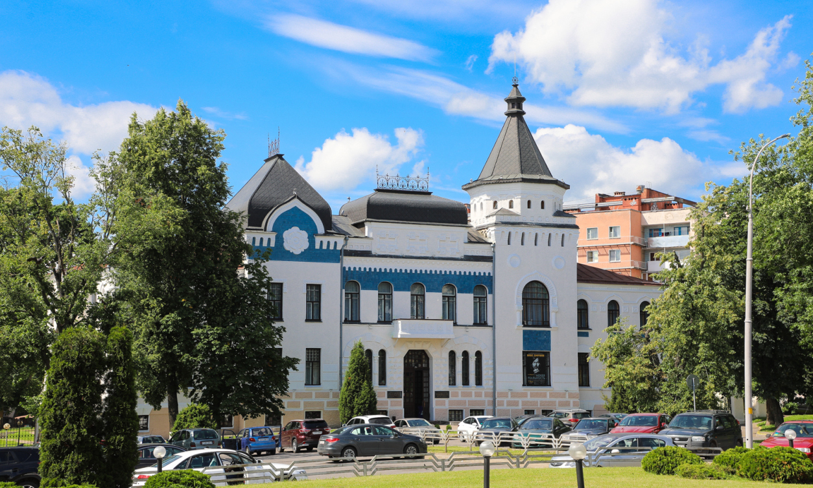
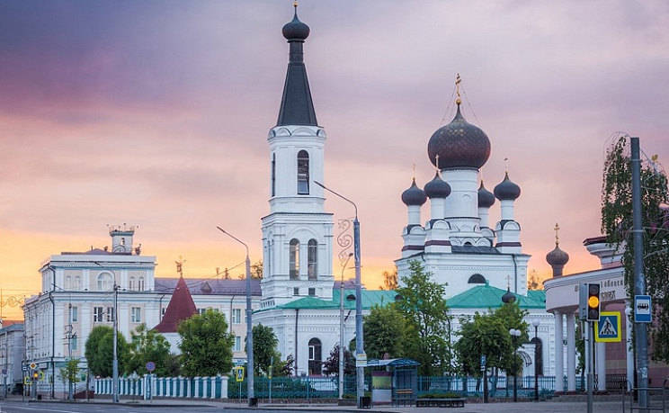

Фотогалерея достопримечательностей

Музей
Художественный музей имени П. В. Масленикова
В музее 4 постоянно действующих экспозиции: «Картинная галерея народного художника Республика Беларусь П. В. Масленикова», «Сохранённое наследие», «Изобразительное искусство Могилёвщины XX века» и «Тайна Креста».

Собор
Собор Трёх Святителей
Отличительной особенностью храма является возможность войти в него с трёх сторон. Храм назван в честь трёх святителей — Василия Великого, Григория Богослова, Иоанна Златоуста.
 Католический собор
Католический собор
Собор Успения Девы Марии
Памятник архитектуры в стиле барокко, построен в 1738—1752 годах. В интерьере выделяются фрески на библейские темы на сводах храма.